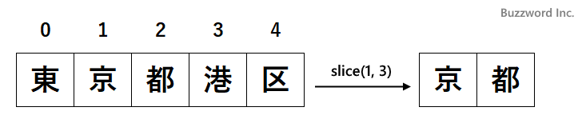
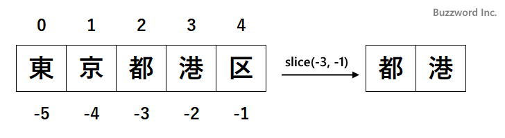
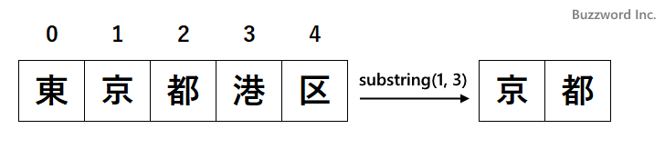

- Home ›
- JavaScript入門 ›
- 文字列
文字列から開始位置と終了位置を指定して部分文字列を取得する(slice, substring)
String オブジェクトのインスタンスメソッドである slice および substring メソッドは、文字列に対して開始位置と終了位置を指定して部分文字列を取得します。ここでは String オブジェクトの slice メソッドおよび substring メソッドの使い方について解説します。
※ slice および substring メソッドはほぼ同じ動作をするためまとめて解説します。違いはインデックスとして負の値を指定した場合の挙動と、開始インデックスが終了インデックスよりも大きい場合の挙動です。
部分文字列を取得する(slice)
String オブジェクトの slice メソッドは、対象の文字列の中の指定した位置にある部分文字列を新しい文字列として返します。書式は次のとおりです。
文字列.slice(開始インデックス[, 終了インデックス])
対象の文字列の開始インデックスから終了インデックスまでの部分文字列を新しい文字列を戻り値として返します。終了インデックスを省略した場合は文字列の最後までを取得します。対象の文字列は変更されません。
インデックスは文字列の最初の文字が 0 、次の文字が 1 となります。部分文字列は開始インデックスで指定した文字から、終了インデックスで指定した一つ前の文字までを部分文字列として取得します。下記は開始インデックスを 1 、終了インデックスを 3 に指定した場合です。

次のサンプルをみてください。
let address = '東京都港区芝公園'; let sub; sub = address.slice(3, 5); console.log(sub); >> 港区 sub = address.slice(3); console.log(sub); >> 港区芝公園
開始インデックス 3 、終了インデックス 5 を指定した場合は、インデックス 3 から 4 までの部分文字列を取得します。開始インデックス 3 を指定し終了インデックスを省略した場合は、インデックス 3 から文字列の最後までの部分文字列を取得します。
インデックスに負の値を指定する
開始インデックスおよび終了インデックスには負の値を指定することができます。最後の文字が -1 、最後の一つ前の文字が -2 となります。

次のサンプルをみてください。
let address = '東京都港区芝公園'; let sub; sub = address.slice(-3, -1); console.log(sub); >> 芝公 sub = address.slice(-5, 5); console.log(sub); >> 港区
開始インデックス -3 、終了インデックス -1 を指定した場合は、インデックス -3 から -2 までの部分文字列を取得します。またインデックスは正の値と負の値を混在して指定することもできます。
終了インデックスが開始インデックスと同じまたは小さい場合
slice メソッドでは開始インデックスが示す位置の文字から終了インデックスが示す位置の一つ前の文字までの部分文字列を取得します。もし終了インデックスが開始インデックスと同じかまたは小さい場合、部分文字列は空文字となります。
次のサンプルをみてください。
let address = '東京都港区芝公園'; let sub; sub = address.slice(3, 4); console.log(sub); >> 港 sub = address.slice(3, 3); console.log(sub); >> (空文字) sub = address.slice(3, 2); console.log(sub); >> (空文字)
終了インデックスと開始インデックスが同じだった場合、または終了インデックスが開始インデックスよりも小さかった場合、 slice メソッドでは空文字を返します。
部分文字列を取得する(substring)
String オブジェクトの substring メソッドは、対象の文字列の中の指定した位置にある部分文字列を新しい文字列として返します。書式は次のとおりです。
文字列.substring(開始インデックス[, 終了インデックス])
対象の文字列の開始インデックスから終了インデックスまでの部分文字列を新しい文字列を戻り値として返します。終了インデックスを省略した場合は文字列の最後までを取得します。対象の文字列は変更されません。
インデックスは文字列の最初の文字が 0 、次の文字が 1 となります。部分文字列は開始インデックスで指定した文字から、終了インデックスで指定した一つ前の文字までを部分文字列として取得します。下記は開始インデックスを 1 、終了インデックスを 3 に指定した場合です。

次のサンプルをみてください。
let address = 'JavaScript'; let sub; sub = address.substring(4, 7); console.log(sub); >> Scr sub = address.substring(4); console.log(sub); >> Script
開始インデックス 4 、終了インデックス 7 を指定した場合は、インデックス 4 から 6 までの部分文字列を取得します。開始インデックス 4 を指定し終了インデックスを省略した場合は、インデックス 4 から文字列の最後までの部分文字列を取得します。
インデックスの指定方法
なおインデックスに負の値を指定指定した場合は 0 を指定したものとみなされます。また文字列の文字数を超えるインデックスを指定した場合は文字数と同じインデックスが指定されたもの(インデックスは 0 から開始されるので結果的に最後の文字までが含まれます)とみなされます。
次のサンプルをみてください。
let address = 'JavaScript'; let sub; sub = address.substring(-3, 4); console.log(sub); >> Java sub = address.substring(4, 15); console.log(sub); >> Script
開始インデックス -3 、終了インデックス 4 を指定した場合は、インデックス 0 から 3 までの部分文字列を取得します。また開始インデックス 4 、終了インデックス 15 を指定した場合、対象の文字数が 10 なので終了インデックスは 10 を指定したものとみなされます。
終了インデックスが開始インデックスよりも小さい場合
終了インデックスが開始インデックスと同じかまたは小さい場合、開始インデックスと終了インデックスを入れ替えて部分文字列を取得します。次のサンプルをみてください。
let address = 'JavaScript'; let sub; sub = address.substring(3, 3); console.log(sub); >> (空文字) sub = address.substring(6, 3); console.log(sub); >> aSc
終了インデックスと開始インデックスが同じだった場合は空文字を返します。または終了インデックスが開始インデックスよりも小さかった場合、入れ替えて部分文字列を取得します。
-- --
String オブジェクトの slice メソッドおよび substring メソッドの使い方について解説しました。
( Written by Tatsuo Ikura )

著者 / TATSUO IKURA
初心者～中級者の方を対象としたプログラミング方法や開発環境の構築の解説を行うサイトの運営を行っています。